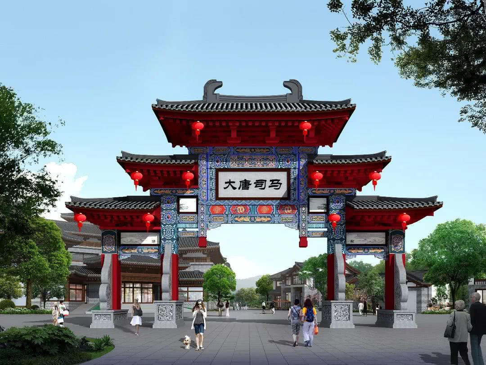
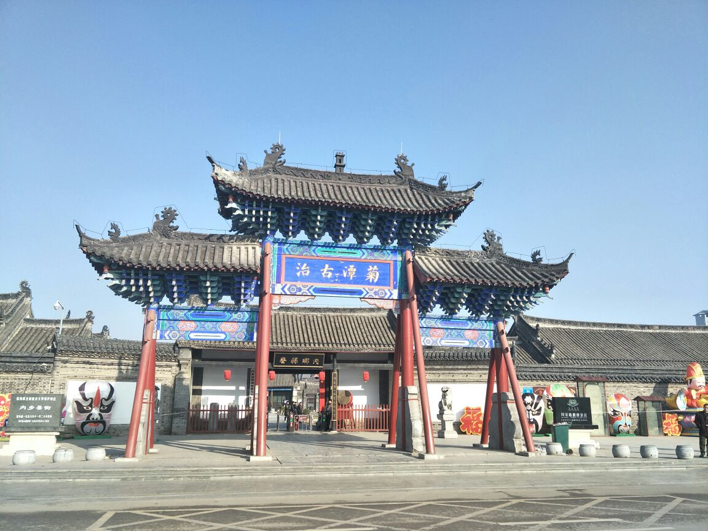
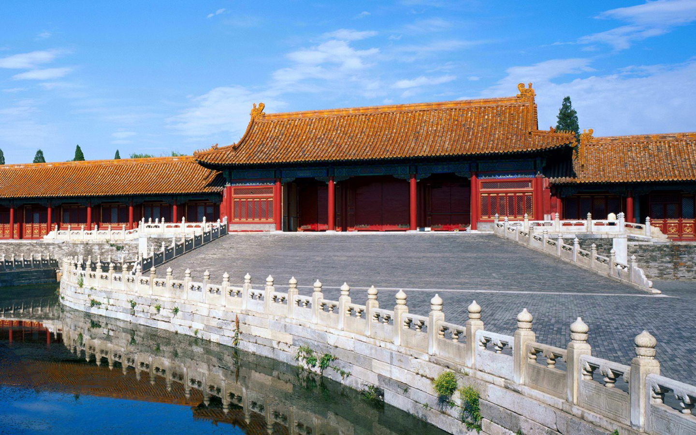
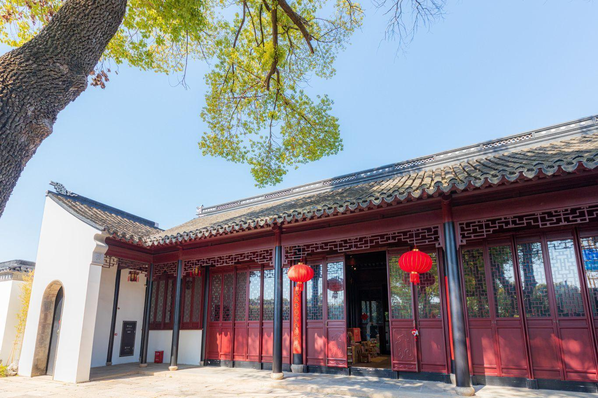
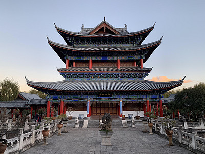
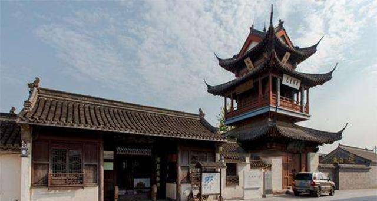

地方行政核心建筑，布局遵循“前堂后寝”规制，设大堂、二堂、花厅等区域，大堂为审案理政之所，威严肃穆，体现地方治理的等级秩序。

县级行政机构建筑，规模较州府简约但规制完整，设仪门、大堂、宅门、内衙，兼顾行政、司法、居住功能，是基层治理的物理载体。

中央行政机构建筑，位于京城核心区域，建筑布局对称规整，按职能分署办公，体现中央集权的行政体系，用材考究、规制森严。

省级司法监察机构建筑，专司刑狱监察，建筑布局突出威慑性，设公堂、牢狱、档案库等，是古代司法体系的重要物化体现。

跨省军政长官办公建筑，规模宏大，兼具行政与军事指挥功能，建筑布局融合官署与军营特色，体现督抚节制数省的权力地位。

古代交通与通信行政建筑，兼具办公、接待、驿传功能，建筑布局灵活，设驿丞署、驿舍、马厩等，是古代官办交通体系的节点。
建筑规模、形制、装饰严格遵循封建等级制度，屋顶形式（歇山顶/硬山顶）、开间数量、彩绘纹饰均与官阶对应，彰显权力层级。
遵循“前朝后寝、中轴对称”布局，前为办公理政的公域，后为官员居住的私域，功能分区明确，体现“官民分野、公私分明”的理念。
结合行政、司法、居住、仓储等功能，大堂设公案、戒石铭，后院置花厅、库房，牢狱附于侧，满足地方治理的全流程需求。
设照壁、仪门、戒石坊等标志性建筑，庭院开阔、廊柱挺拔，色彩以青灰为主辅以朱红，营造庄重肃穆的行政氛围。
中国古代官府建筑是封建行政体系的物化体现，承载着传统政治文化与治理理念：
权力象征：建筑规制与装饰直接映射官员品级与行政权力，是封建等级制度的可视化表达。
治理理念：“前堂后寝”布局体现“勤政为民”的治理观，戒石铭、公生明牌坊彰显廉政与公正追求。
地域治理：地方官府建筑融合地域建筑特色，同时保持中央规制，是中央集权与地方自治的平衡体现。
礼制秩序：从仪门到内衙的空间序列，规范了官民、上下级的交往礼仪，维系封建行政秩序。